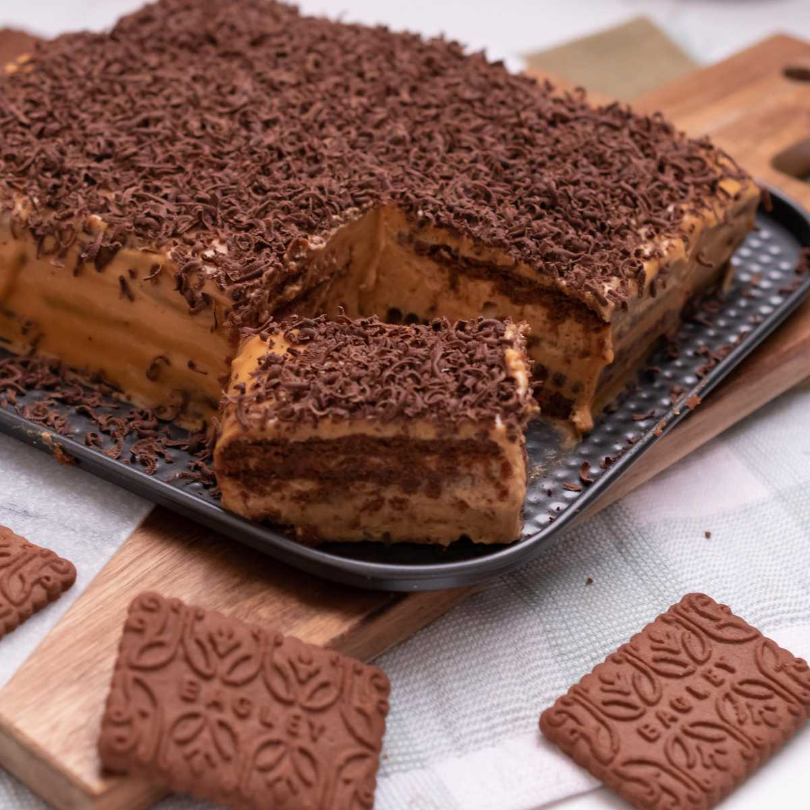
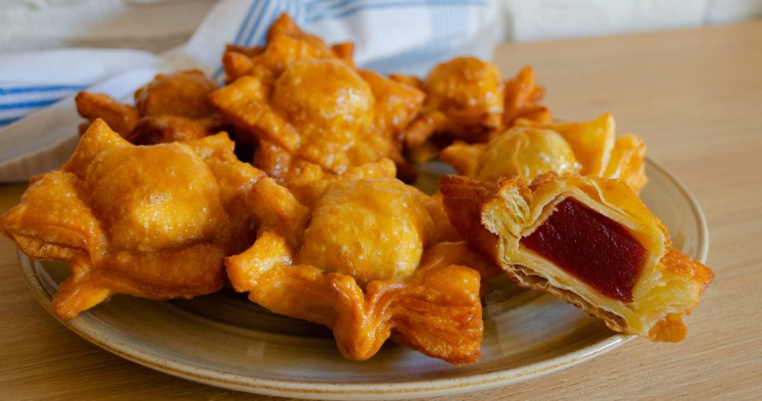
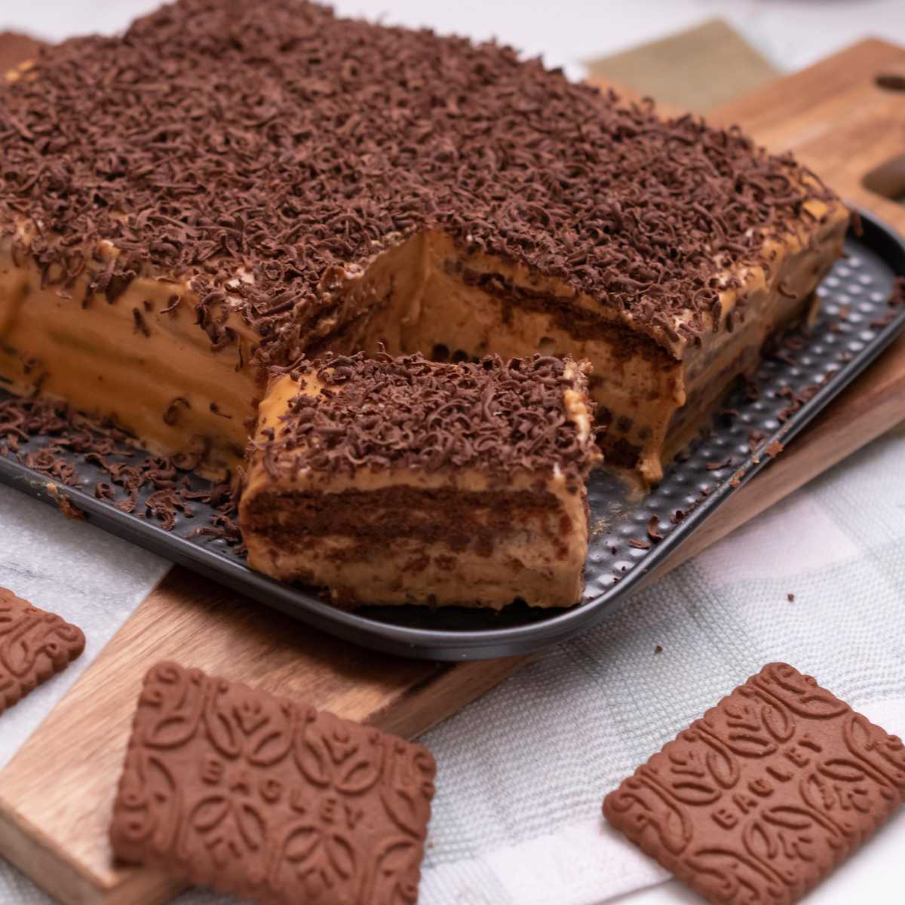
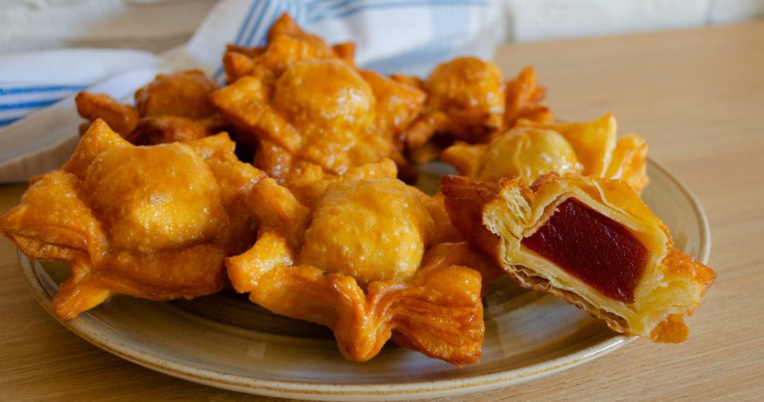

Dato Curioso!
Sobre el Alfajor de Maicena:
El origen de los alfajores de maicena es árabe. El prefijo “al” sería un signo que indicaría la naturaleza árabe de la palabra (“al-hasú”, en castellano, “el relleno”) y, en consecuencia, del postre en cuestión. Fue llevado a América en el periodo colonial, expandiéndose por toda Sudamérica y, especialmente, por Argentina, lugar donde han resultado ser muy populares. De hecho, la tradición de alfajores en Argentina se remonta a 130 años atrás, siendo el país donde más variedades de este postre podemos encontrar (simples, triples, regionales, caseros e industriales). Los más típicos y populares en Argentina son los alfajores de maicena. En la actualidad, en Argentina estos dulces están en todas las mesas de cumpleaños infantiles y en todas las reuniones. Aparte de los alfajores de maicena, en las distintas regiones del país se han elaborado sus propias variedades. Destacan el cordobés, con dulces de fruta de relleno, el de Santa Fe, con tres tapas de masa crujiente rellenos de dulce de leche cubiertos con azúcar glass y el Tucumano, conocido también como Clarita, elaborado con unas galletitas crocantes con tapas y con dulce de leche de relleno con miel de caña. O la inmensa industria del alfajor cubierto de chocolate de la costa argentina, especialmente en Mar del Plata, Alfajor que es regalo obligado a la hora de regresar de la playa. El alfajor de maicena se destaca por su inconfundible sabor. Se deshace en la boca y nos deleita con la mezcla de dulce de leche y coco rallado. Un placer que nos remonta a la infancia.

Dato Curioso!
Sobre el Postre Balcarce:
Sus orígenes se remontan al café París y a la cabeza del pastelero Guillermo Talou. En 1950 él desarrolló una receta similar al postre Imperial Ruso, por lo que en un principio era conocido como ‘postre Imperial'. Poco a poco la invención de Talou fue ganando popularidad y se hacían largas filas para conseguir su porción. Luego el maestro pastelero se trasladó a Mar del Plata donde proveía a varias confiterías con su postre. Pero en 1958 le llegó una oferta de parte de Domingo Dondero para vender su marca y la fórmula original. Para ese entonces el postre ya era conocido como ‘Balcarce' en tierra marplatense por la ciudad de origen de Talou. La familia Dondero se hizo con la receta y fundó la compañía Balcarce para empezar a comercializarlo. Años más tarde incorporaría alfajores marplatenses, budines y pan dulces, además de abrir cafés con la marca. Después de entrar en concurso de acreedores en 2002, la firma pasó a manos de la familia Sanabria. Sin embargo, Talou no se quedó de brazos cruzados y, aunque durante varios años estuvo alejado del rubro, en 1969 se asoció con su amigo Rogelio Adobatti y abrieron un local en Balcarce para traer de regreso el postre. Desde hace más de 50 años que la confitería Comoantes protege la receta original de Talou y continúa como una parada obligatoria para los fanáticos que van a la Costa Atlántica.
Dato Curioso!
Sobre La Chocotorta:
Los postres argentinos son muchas veces considerados entre los mejores del mundo. En esta oportunidad, la famosa Chocotorta fue reconocida internacionalmente y fue elegida entre las 10 mejores tortas del planeta. El famoso portal gastronómico Taste Atlas todos los años realiza un ranking de las 50 mejores tortas a nivel mundial y, en la última edición, la Chocotorta logró quedarse con la décima posición de la lista. Detrás del popular postre argentino quedó ubicado el Cheesecake de Nueva York que no pudo entrar en el top 10. En cuanto a la Chocotorta, Taste Atlas consideró: “Las galletitas se ablandan con leche y se apilan en capas con una combinación de queso crema y dulce de leche”, fue la descripción de la revista gastronómica para hablar de su preparación y recibió 4.5 puntos. La torta argentina ya había sido reconocida por Taste Atlas. De hecho, en el 2020 había obtenido el primer puesto del ranking. En el primer lugar se ubicó la torta rusa Medovik, que consiguió 4.8 puntos y el podio lo completaron la Sernik, de origen polaco que recibió 4.7 puntos y el tercer puesto obtuvo reconocimiento latinoamericano: la Pavê, una torta helada brasileña con el mismo puntaje.

Dato Curioso!
Sobre Los Pastelitos:
Al igual que las empanadas y el locro, los pastelitos criollos son típicos de la cocina argentina. Los pastelitos criollos, en la Argentina están asociados al 25 de mayo de 1810, año en el que se conformó el Primer Gobierno Patrio. Son parte de la cultura popular del país y en cada fecha patria hay una alta demanda de esta delicia que se consume en todos los hogares. La historia narra que en aquel entonces las mujeres llevaban por la calle canastas en la cabeza llena de estos pastelitos que cocinaban en sus casas y los vendían para celebrar el Primer Gobierno Patrio y gritaban: "Pastelitos calientes que queman los dientes". Se trata de una masa crocante de hojaldre, rellena de dulce de batata y dulce de leche, a elección de cada gusto personal, pero los más tradicionales son los de dulce de membrillo. Los pastelitos criollos se suman a otros emblemas del país: las empanadas y el locro.

Dato Curioso!
Sobre Los Buñuelos:
Es uno de los postres más elegidos por los argentinos en las fiestas patrias. Tiene una preparacion simple para quedar bien con amigos o para disfrutar en familia. El origen de los buñuelos tiene su controversia, algunos piensan que deriva de la palabra puñuelo, un tipo de alimento que los romanos amasaban con los puños; otros creen que la palabra proviene del francés beignet. En realidad, como la mayoría de los dulces y confituras que consumimos en la actualidad, su procedencia se remonta a la cultura árabe y morisca. Y en la gastronomía criolla es un postre que tuvo (y tiene) un lugar predominante. Por eso, cada fiesta patria, y en especial el 9 de julio, vuelve a la mesa de las familias argentinas con un enorme protagonismo. Dulces, de membrillo o de batata, o salados, hay buñuelos para todos los gustos.

Dato Curioso!
Sobre Las Bolas de Fraile:
Para los argentinos es muy frecuente pedir cañoncitos de dulce de leche, bolas de fraile o vigilantes. Ir a la panadería y comprar este tipo de facturas para comer un domingo a la tarde con mate o con un rico café es un clásico en muchos de los hogares nacionales. Sin embargo, ¿cuántos saben el origen de los nombres de las facturas? El origen se remonta al siglo XIX y se relaciona con una asociación de panaderos vigente por aquel momento. Todo comenzó en el año1887, en Buenos Aires. En aquel momento, el anarquista italiano Ettore Mattei creó la primera institución de la resistencia argentina, que fue la Sociedad Cosmopolita de Resistencia y Colocación de Obreros Panaderos. Al año siguiente, en 1888, los panaderos organizados iniciaron un reclamo a través de una huelga que duró más de 15 días. Durante esa protesta, decidieron manifestar sus reclamos de manera clara y su mejor idea fue hacerlo a través de los nombres de sus creaciones, esas que sacaban todos los días del horno y vendían entre los habitantes. Bolas de fraile o Suspiro de monja: rellenas de dulce de leche o crema pastelera, los panaderos de 1888 les pusieron ese nombre para ironizar sobre los curas y las hermanas.

Dato Curioso!
Sobre Los Cubanitos:
Al igual que la manzana acaramelada, el cubanito forma parte obligada de la historia de una generación, golosina que de alguna forma estaba en todos los eventos infantiles. Era una golosina ambulante y se comercializaba en la playa, a la entrada de los cines y los circos, en los zoológicos y por la calle. Hoy ha quedado eclipsado por la enorme oferta de golosinas ultraprocesadas, cubiertas de estridente packaging que se venden en los kioscos. ¿Dónde y cómo se originó el cubanito? No hay fuentes confiables acerca de su aparición en la Argentina. Es una masa de barquillo (algo clásico en pastelería) tubular, cilíndrica, rellena de dulce de leche. Algunos asocian su nombre al cigarro de origen cubano por la similitud de la forma. También se dice que el primero en hacerlo fue un polaco llamado Juan Gabriel Gregorius, que llevó a cabo los primeros ejemplares en la ciudad de Bahía Blanca. Lo cierto es que lo que fue moneda corriente hace unas décadas atrás, hoy no resulta sencillo de encontrar.

Dato Curioso!
Sobre La Pasta Frola:
Cuenta la leyenda que el origen de esta tarta se debe a una sirena llamada Partenope, que una vez por año visitaba el Golfo de Posillipo. Los napolitanos, para homenajearla le regalaban trigo, huevos, agua de flores de naranjo y otras materias primas que siete vírgenes pasaron a buscar. La sirena, en agradecimiento, recibió de ellos la pasta frola, que, a su vez, obsequió a los napolitanos. Pero más realista es la historia que afirma que unas religiosas la inventaron en el convento de San Gregorio de Armeno. La pasta frola trascendió los muros del convento y se difundió por la región. Pero su fama llegó cuando el carruaje del marqués de Rubis rompió una rueda durante un viaje y debió pedir ayuda a unos campesinos, que mientras lo auxiliaban le hicieron probar la tarta. Tanto le gustó al noble, que la llevó a la corte de los Borbones. Se cuenta que la reina María Teresa de Austria, esposa de Fernando II de Borbón, apodada con el mote de "la Reina que nunca sonríe", probó la pasta frola y exhibió una gran sonrisa. En Sudamérica, la pasta frola llegó de la mano de inmigrantes italianos y en su preparación se usa membrillo para el relleno, siendo esta tarta la mejor compañía para tomar un buen mate o un té.